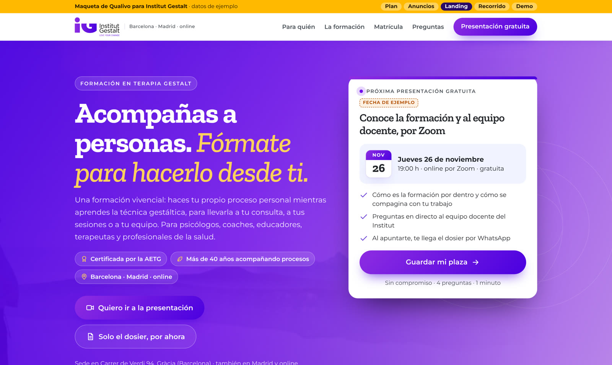
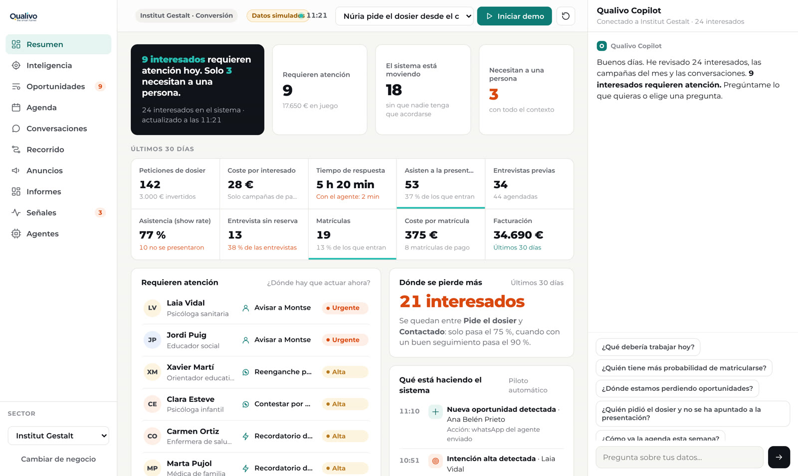

Qualivo × 
Que Meta os traiga personas que se matriculan, no solo formularios.
01 · Qué hacemos
02 · Vuestro alumno ideal
03 · Vuestro cliente potencial
Partimos de tres clientes potenciales, cada uno con sus puntos de dolor. Para cada uno probamos anuncios, una landing y preguntas en el formulario. Hoy los validamos con vosotros: cuál es real, cuál falta y cuál sobra.
03 · Cliente potencial 1 de 3 · hipótesis
Psicólogo o terapeuta con consulta propia, individual o de grupo. Ya tiene oficio y busca un enfoque humanista y vivencial.
Compaginar una formación de varios años con su consulta.
Lo que pasa en la sesión, mientras pasa.
Certificada por la AETG · +40 añosinstitutgestalt Hay algo que pocas formaciones enseñan: qué hacer con lo que está pasando en la sesión, mientras pasa. … más
¿Tu cliente se emociona y tú vuelves a la técnica?
La Gestalt trabaja con lo que pasa aquí y ahora: en el cliente y en ti.
Certificada por la AETG. Descarga el dosier.
institutgestalt Tres cosas que cambian en tu consulta cuando trabajas desde la Gestalt. Desliza → … más
¿Qué haces cuando en sesión pasa algo que no está en el manual?
♪ Audio original · institutgestalt
«Acompañas a personas. Fórmate para hacerlo desde ti.» Ver la landing →
«¿A qué te dedicas?» → Psicología. «¿Acompañas ya a personas?» → con consulta propia. Si quiere empezar en la próxima convocatoria, es A.
03 · Cliente potencial 2 de 3 · hipótesis
Coach, docente, educador social u orientador. Acompaña a personas en su trabajo, pero no viene de la psicología.
Dudar si una formación «de terapeutas» es para él, y el precio.
Cuando la técnica se queda corta, la herramienta eres tú.
Certificada por la AETG · +40 añosinstitutgestalt Sabes hacer buenas preguntas. La Gestalt te enseña a sostener lo que aparece cuando la conversación se vuelve personal. … más
Sabes hacer buenas preguntas.
Pero ¿qué haces cuando llega la emoción?
No hace falta venir de la psicología. Ven a conocerla.
institutgestalt Para coaches, docentes y educadores que acompañan a personas. Desliza → … más
Tres momentos de una sesión en los que la técnica no basta
♪ Audio original · institutgestalt
«Cuando la técnica se queda corta, la herramienta eres tú.» Ver la landing →
«¿A qué te dedicas?» → Coaching o Educación. «¿Acompañas ya a personas?» → en mi trabajo. Es A o B según cuándo quiere empezar.
03 · Cliente potencial 3 de 3 · hipótesis
Persona que ha hecho su propio proceso terapéutico y quiere darle un giro a su carrera para acompañar a otros.
Comprometerse sin conocer la formación ni al equipo. Necesita ver y preguntar antes.
Antes de decidir, conócela por dentro.
Certificada por la AETG · +40 añosinstitutgestalt ¿Quieres dedicarte a acompañar a personas? Ven a la presentación gratuita: conoce la formación y resuelve tus dudas con el equipo docente. … más
Paso 1Te enviamos el dosier.
Paso 2Vienes a la presentación gratuita por Zoom.
Paso 3Hablas con el equipo y, si encaja, reservas.
institutgestalt Así se entra en la formación, paso a paso. Sin prisa y sin compromiso. Desliza → … más
¿Te ves acompañando a otras personas?
♪ Audio original · institutgestalt
«Quieres acompañar a personas. Empieza por conocer la formación por dentro.» Ver la landing →
«¿A qué te dedicas?» → Otro ámbito. «¿Acompañas ya a personas?» → todavía no. Es B si quiere empezar en unos meses y C si solo se informa.
04 · Formulario
05 · Landing

06 · Por dentro
Nombres y mensajes de ejemplo. Los textos los aprobáis vosotros.
07 · Qualivo Intelligence

Datos simulados